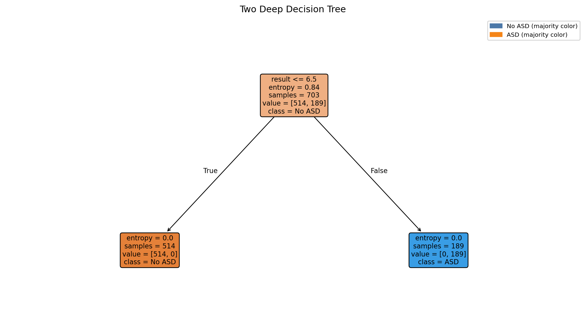

Autism Screening – Analysis Gallery
Model Summary (current)
Latest metrics and executive notes are available in the report.
Open current reportHow this was built (Notebook + Code)
Step-by-step: clean/encode → split/scale → train a PyTorch logistic model → evaluate.
import numpy as np, pandas as pd, torch
from torch import nn
from sklearn.model_selection import train_test_split
from sklearn.preprocessing import StandardScaler
from sklearn import metrics
SEED = 42class TorchLogReg(nn.Module):
def __init__(self, in_features):
super().__init__()
self.linear = nn.Linear(in_features, 1)
def forward(self, x):
return self.linear(x)Training uses BCEWithLogitsLoss with Adam, early stopping on validation loss, and standardization via StandardScaler. See the notebook for the full pipeline and evaluation code.
Code to generate: Class Balance + Correlation
# Class balance (Matplotlib/Seaborn)
vc = df['class_asd'].value_counts().sort_index()
ax = sns.barplot(x=vc.index, y=vc.values, palette=['#4C78A8','#F58518'])
ax.set_xlabel('class_asd'); ax.set_ylabel('count'); ax.set_title('Class Balance')
plt.tight_layout(); plt.savefig('figures/eda_class_balance.png', dpi=180)
# Correlation heatmap
num_corr = df.select_dtypes(include='number').corr()
sns.heatmap(num_corr, cmap='coolwarm', center=0, cbar=True)
plt.title('Correlation Heatmap')
plt.tight_layout(); plt.savefig('figures/eda_corr_heatmap.png', dpi=180)Class Balance
Counts of ASD vs non‑ASD labels in the dataset.

- Imbalance can bias accuracy; use ROC‑AUC/PR‑AUC and F1 for fairer evaluation.
- If imbalance is strong, consider class weights or resampling in training.
Correlation Heatmap
Pairwise correlations among numeric features (darker = stronger).

- Highly correlated predictors may inflate variance for linear models.
- Check for potential leakage; very strong correlations with the target warrant scrutiny.
Code to generate: Age/Result histograms
# Age histogram by class
sns.histplot(data=df, x='age', hue='class_asd', stat='density', common_norm=False, element='step')
plt.tight_layout(); plt.savefig('figures/hist_age_by_class.png', dpi=180)
# Result (A1–A10 total) histogram by class
sns.histplot(data=df, x='result', hue='class_asd', stat='density', common_norm=False, element='step')
plt.tight_layout(); plt.savefig('figures/hist_result_by_class.png', dpi=180)Age by Class
Distribution of ages split by label.

- Look for shifts/overlap; clear shifts may indicate predictive signal.
- Consider confounding factors (sampling, demographics).
Result (A1–A10 total) by Class
Distribution of screening score totals.

- Higher totals generally raise predicted likelihood, especially in linear models.
- Use calibration if converting scores to probabilities.
Code to generate: Key categorical counts
# Used app before by class
sns.countplot(data=df, x='used_app_before', hue='class_asd')
plt.tight_layout(); plt.savefig('figures/count_used_app_before_by_class.png', dpi=180)
# Family autism history by class
sns.countplot(data=df, x='austim', hue='class_asd')
plt.tight_layout(); plt.savefig('figures/count_austim_by_class.png', dpi=180)Interactive 3D: A1 vs A7 vs Result (by class)
- Interactive rotation helps assess whether high A1/A7 responses together with higher totals cluster by class.
- If clusters overlap heavily, expect limited separability from these items alone.
Family Autism History by Class
Self‑reported family history.

- Genetic/environmental factors can correlate; avoid deterministic interpretations.
Code to generate: Jaundice + RF importances
# Jaundice counts by class
sns.countplot(data=df, x='jundice', hue='class_asd')
plt.tight_layout(); plt.savefig('figures/count_jundice_by_class.png', dpi=180)
# RandomForest feature importances (top 20)
rf = RandomForestClassifier(
n_estimators=400, max_depth=12, min_samples_leaf=5,
max_features='sqrt', class_weight='balanced', random_state=42)
rf.fit(X_train, y_train)
imp = pd.Series(rf.feature_importances_, index=X_train.columns).sort_values(ascending=False).head(20)
imp.plot(kind='barh')
plt.gca().invert_yaxis(); plt.tight_layout(); plt.savefig('figures/featimp_RandomForest.png', dpi=180)Jaundice at Birth by Class
Reported jaundice split by label.

- Associations vary; treat as a feature among many, not a predictor alone.
Top Feature Importances (RandomForest)
Variable importance from RF (subject to re‑estimation).

- Importance reflects split utility, not causality; confirm with multiple methods.
- Expect ranks/weights to adjust after RF regularization and CV.
Code to generate: Training curve + Confusion matrix
# Training curve (recorded each epoch)
plt.plot(history['train_loss'], label='train'); plt.plot(history['val_loss'], label='val')
plt.legend(); plt.tight_layout(); plt.savefig('figures/torch_logreg_training_curve.png', dpi=180)
# Confusion matrix (sklearn)
from sklearn.metrics import ConfusionMatrixDisplay
ConfusionMatrixDisplay.from_predictions(y_test, y_pred)
plt.tight_layout(); plt.savefig('figures/cm_TorchLogReg.png', dpi=180)Training Dynamics (Logistic)
Loss across epochs (train vs validation).

- Early stopping mitigates overfitting when validation loss stops improving.
Confusion Matrix (Logistic)
Predicted vs true labels on held‑out test data.

- Balance false negatives vs false positives based on screening priorities.
Executive Notes
What these visuals mean for you
- Counts and charts show how many people answered in each way; they describe the dataset, not a diagnosis.
- Higher A1–A10 totals usually align with more ASD‑like responses, but there is overlap, no single answer decides the outcome.
- Age, country, and other details give context; they can relate to answers but are not causes by themselves.
- “Feature importance” shows which inputs helped the model separate groups, it does not explain personal reasons or causes.
- Your quiz result is an indicator to help you reflect. If your likelihood is High or Strong, consider talking with a clinician for guidance.
RandomForest Feature Importances (Matplotlib)
Bar chart of the top-ranked input variables by split importance.
- Highlights which answers most helped the model separate classes.
- Use alongside other checks (calibration, CV) to avoid over‑interpreting any single feature.
Code to generate: Two‑Deep Decision Tree (Entropy)
Quick, interpretable rules from a very shallow tree.
# Fit a very shallow decision tree (depth=2) for interpretability
from sklearn.tree import DecisionTreeClassifier, plot_tree
import matplotlib.pyplot as plt
tree = DecisionTreeClassifier(
max_depth=2, criterion='entropy',
class_weight='balanced', random_state=42)
tree.fit(X_train, y_train)
# Matplotlib rendition (no Graphviz dependency)
plt.figure(figsize=(10, 6))
plot_tree(
tree,
feature_names=X_train.columns.tolist(),
class_names=['No ASD','ASD'],
impurity=True, filled=True, rounded=True, fontsize=8
)
plt.title('Two-Deep Decision Tree (Entropy)')
plt.tight_layout()
plt.savefig('figures/tree_two_deep.png', dpi=180, bbox_inches='tight')
Two Deep Decision Tree
- Shallow trees surface high level rules they trade accuracy for interpretability
Decision Tree Depth 10

- Forces the tree to use individual A1–A10 items, revealing cooler combinations.
- Expect more levels and non‑pure leaves